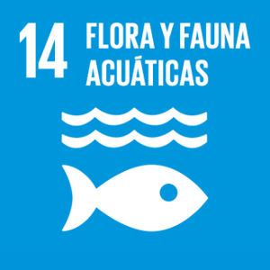

Esta pagina va sobre una tienda de productos de Bob Esponja.
Algunos de los productos disponibles en la pagina son peluches de Bob Esponja y sus amigos, a demas de una seleccion de productos varios
Los productos de esta tienda estan hechos de materiales reciclados
La contaminacion esta destruyendo el hogar de bob esponja y sus amigos
Esta pagina utiliza energias renovables

Su creador es Hector Martinez de la clase de DAW en el IES Pedro Jimenez Montoya
La deicison de hacer la pagina de Bob Esponja se debe a el juego que podria dar entre los colores y los personajes para cada apartado de la pagina
Este proyecto no deberia llevar css incluido, pero me vi un par de tutoriales y pense en hacerselo para la barra de navegacion, y tambien para no tener 50 lineas extra en cada html
Pagina de bob esponja by
Hector Martinez is licensed under
CC BY-NC-SA 4.0